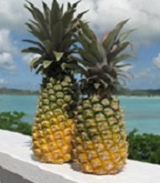
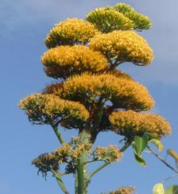
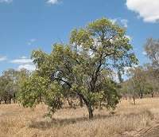
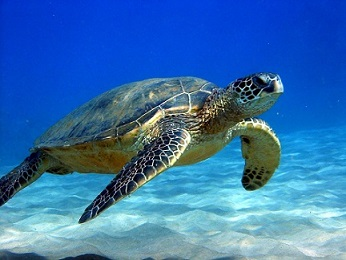
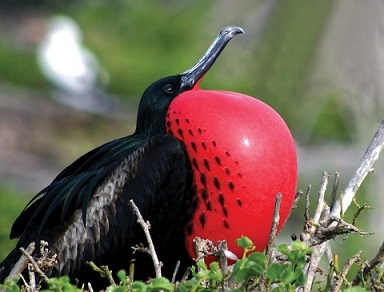
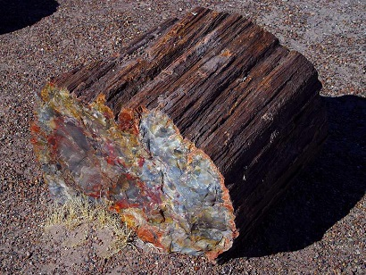

National Symbols of Antigua & Barbuda
The National Symbols are :
- National Food: Pepperpot and Fungi
- National Fruit: Antigua Black Pineapple 
- National Flower: Dagger Log 
- National Tree: Whitewood
- National Sea Animal: Hawksbill Turtle
- National Animal: European Fallow Deer
- National Bird: Frigate Bird (Man-o-war)
- National Stone: Petrified Wood
- T-shirt Mas
- Jouvert (JOO-VEY)
- Queen Show

Pepperpot is a dish that comprises of cooked spinach mixed with pickled pig and chicken. Fungi (FOON-GI) is cornmeal that has water added and is churned to produce a hard cake texture.





Pretrified wood occurs when wood is buried for an extented period of time with volcanic ash and lava, thus it become fossilized.
Carnival
Carnival is a festival that celebrates freedom and emancipation for slavery.These festivities take place during the months of July and August through various activities such as: